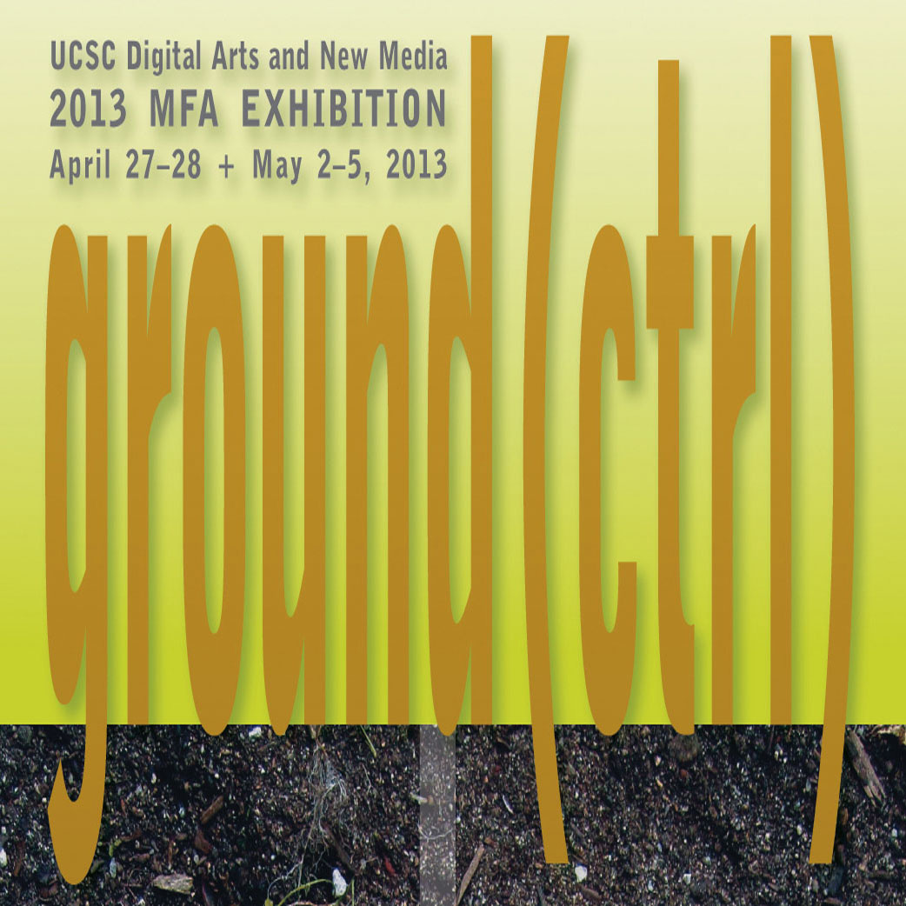

Home » Alumni Weekend » 2013 » Events » DANM Exhibition

DANM mfa exhibition preview
Saturday, April 27 and Sunday, April 28, 10 a.m. – 4 p.m., Digital Arts Research Center near the Performing Arts area
The highlight of each academic year is the graduates' MFA exhibition, when we invite you to join us in our work and play. Here the meaning of "digital arts" and "new media" come to life in the form of video installations, interactive experiences, telematic performances, and sound art—an intersection of digital media art and its social impact.
See the latest technologies combined with repurposed technology, performance, installation, playable media, electronic sculpture, and collaborative research. Digital Arts New Media artists in the graduate program will share their current work with UCSC alumni. Tours and informal dialogues will take place on Saturday and Sunday, April 27–28, 2013, from 10 a.m. to 4 p.m. in the Digital Arts Research Center near the Performing Arts area. Please sign up for a tour on Saturday 11 a.m. –12 p.m., 12–1 p.m., 1–2 p.m., 2–3 p.m., or explore and participate with the exhibition at your own pace. This exhibit is curated by Shelby Graham.
See the work of the following artists:
Click here for more information on directions and parking.
- Home
- Schedule of events
- Places to stay
- Parking and shuttles
- Share your photos
- Invite your friends
- Join Facebook group
- Volunteer opportunities
- Campus activities

Special Events Office
Email: specialevents@ucsc.edu
Phone: (831) 459-5003